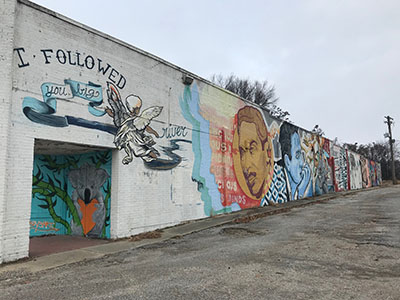
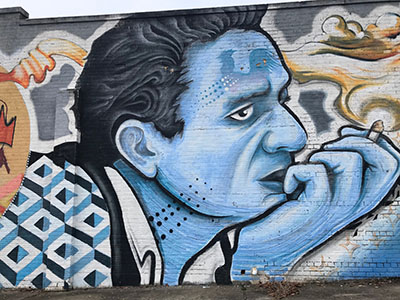
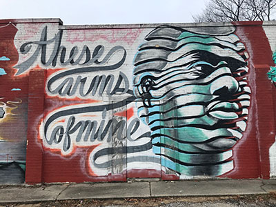

Murals on Lamar Ave.
Students at Christian Brothers University sought out to liven up South Memphis with inspirational murals, some of which highlight Memphis' very own. Specifically covering musicians that have come out of the Memphis area, several murals of Isaac Hayes, Johnny Cash, Otis Redding and more are depicted in various colors and methods.
Other parts of Memphis are also highlighted in the murals that can be seen when driving or walking down Lamar Ave., including the bridge and the depiction of Egyptian women, a nod to Memphis namesake, which was taken from an Egyptian city of the same name.
 